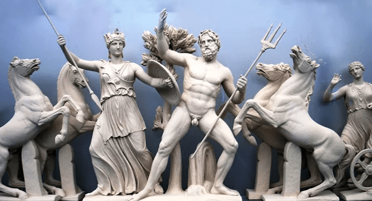
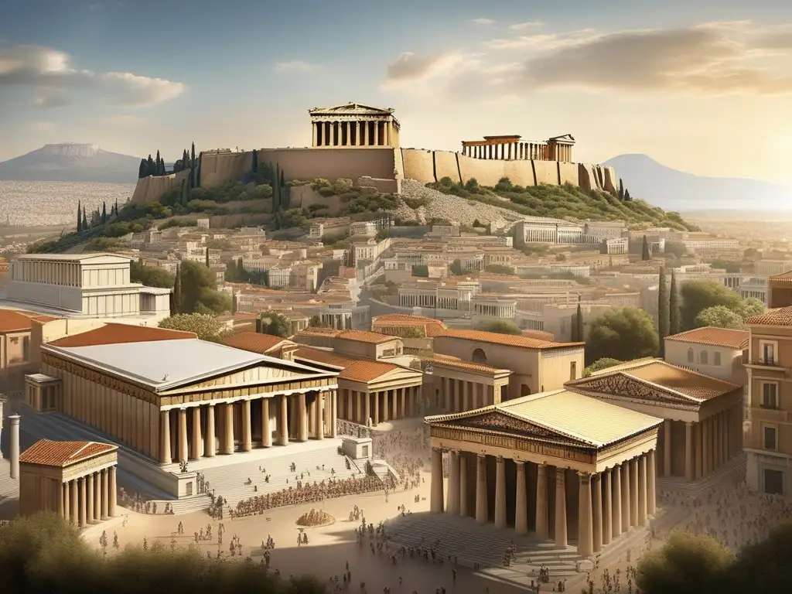
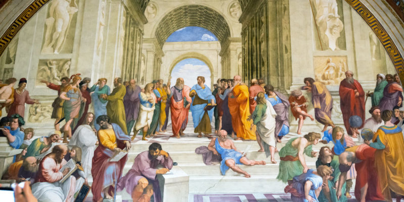
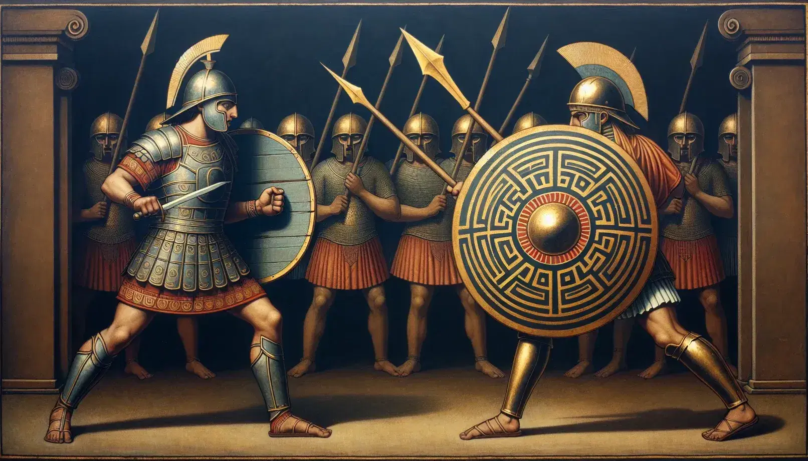
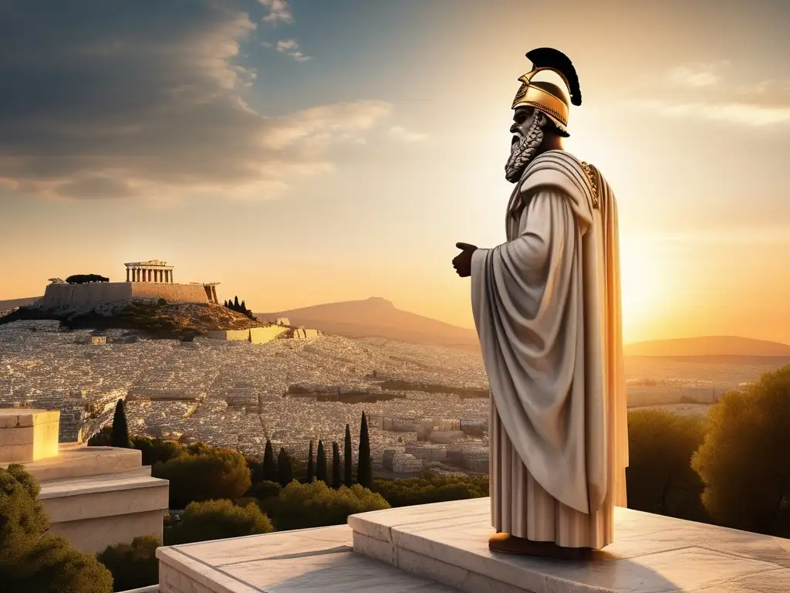
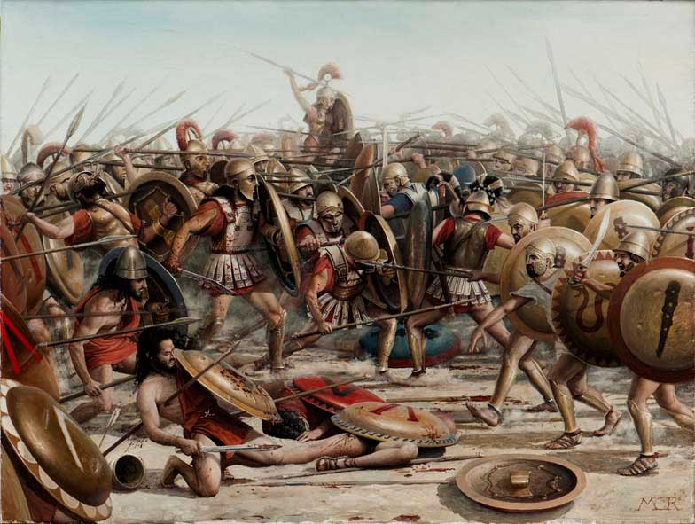
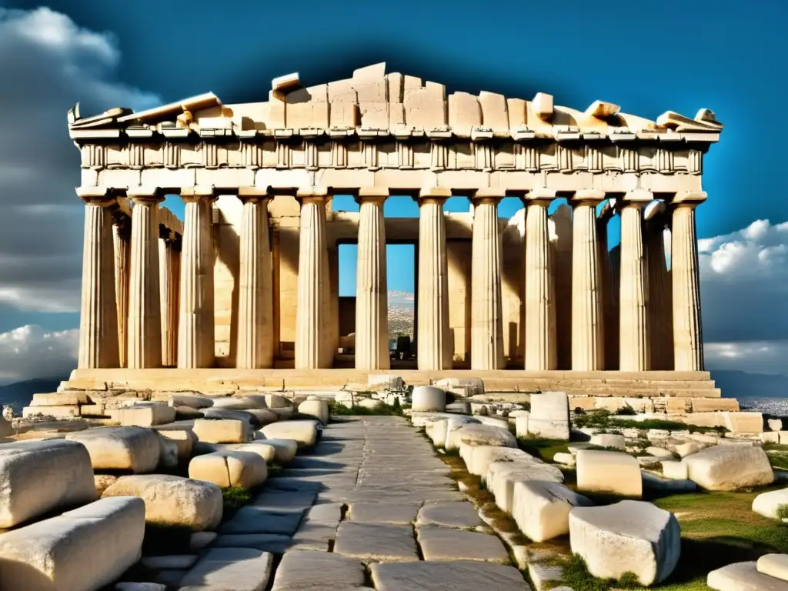

Orígenes de Atenas
La historia de Atenas se remonta a los tiempos prehistóricos, siendo una de las ciudades más antiguas habitadas continuamente en el mundo. Según la mitología griega, su fundación está asociada al rey mítico Cécrope, una figura mitad hombre, mitad serpiente, quien estableció la primera sociedad organizada en la región del Ática. Se dice que Cécrope dividió la población en dos grupos: los geófagos (agricultores) y los demiurgos (artesanos), sentando las bases para el desarrollo de una civilización avanzada.
La ciudad recibió su nombre en honor a la diosa Atenea tras un famoso concurso mitológico entre ella y Poseidón, el dios del mar. Según la leyenda, ambos querían ser los protectores de la ciudad recién establecida. Poseidón ofreció un regalo poderoso: golpeó la tierra con su tridente y surgió un manantial de agua salada, simbolizando la fuerza naval. Por su parte, Atenea plantó un olivo, representando la paz, la sabiduría y la prosperidad. Los habitantes, guiados por Cécrope, eligieron el olivo como el regalo más valioso, otorgándole la victoria a Atenea, quien se convirtió en la protectora de la ciudad que llevó su nombre.
Durante la Edad de Bronce, Atenas comenzó a emerger como un importante centro de comercio y civilización, gracias a su ubicación estratégica en el Mar Egeo. Esta ventaja geográfica permitió a los habitantes establecer rutas comerciales con otras culturas de la región, intercambiando productos como cerámica, metales y aceite de oliva, elementos clave para el desarrollo de su economía. Los primeros asentamientos se concentraron en la colina de la Acrópolis, que ofrecía protección natural contra invasores, y se convirtió en el núcleo político y religioso de la ciudad.
A medida que la civilización micénica floreció en Grecia, Atenas destacó por su estabilidad. A diferencia de otras ciudades que sufrieron invasiones o conflictos internos, Atenas logró mantener una continuidad cultural. Este periodo marcó el inicio de la consolidación de una identidad que más tarde influiría profundamente en la historia del mundo. Las raíces de su estructura social, sus tradiciones religiosas y sus primeras formas de gobierno comenzaron a tomar forma en esta etapa temprana, dejando un legado que perdura hasta hoy.
El Período Arcaico
El Período Arcaico de Atenas, que abarca aproximadamente desde el siglo VIII a.C. hasta el siglo VI a.C., fue una etapa crucial en la formación de la ciudad como una potencia en el mundo griego. Durante este período, Atenas pasó de ser una pequeña comunidad tribal a una ciudad-estado organizada, desarrollando una estructura política, social y cultural más definida. Fue en este tiempo cuando Atenas comenzó a establecer sus primeras instituciones, que serían fundamentales para su posterior esplendor.
En términos políticos, el período arcaico estuvo marcado por la evolución de un sistema de gobierno que eventualmente desembocaría en la democracia ateniense. En sus primeros momentos, Atenas fue gobernada por reyes, pero con el tiempo el poder pasó a manos de los aristócratas y posteriormente a una serie de legisladores, como Dracón y Solón, quienes comenzaron a implementar reformas sociales y políticas significativas. La creación de las primeras leyes escritas y la participación más activa de la ciudadanía en la toma de decisiones sentaron las bases para lo que sería la democracia ateniense en épocas posteriores.
En cuanto a la cultura, el período arcaico también fue una época de gran desarrollo artístico y religioso. Se construyeron los primeros templos importantes en la Acrópolis y otros puntos de la ciudad, y se comenzaron a elaborar las primeras esculturas de figuras humanas con un estilo más realista, como la famosa estatua del Kouros. La mitología y las religiones griegas se consolidaron como aspectos centrales de la vida ateniense, con Atenea como la principal diosa protectora de la ciudad.
La Época Clásica
La Época Clásica de Atenas, que se extiende aproximadamente desde el 480 a.C. hasta el 323 a.C., representa el auge de la ciudad en términos políticos, culturales y militares. Durante este período, Atenas no solo dominó el ámbito griego, sino que también dejó una huella profunda en el desarrollo de la civilización occidental. Este fue un tiempo en el que florecieron las artes, las ciencias, la filosofía y las instituciones democráticas.
Una de las características más destacadas de la época clásica fue el apogeo de la democracia ateniense bajo la influencia de Pericles. La ciudad adoptó un sistema de gobierno en el que los ciudadanos (hombres libres y nativos) tenían la oportunidad de participar directamente en la toma de decisiones políticas, una de las primeras formas de democracia representativa en la historia. Bajo este sistema, se llevaron a cabo asambleas populares y los ciudadanos tenían la capacidad de elegir a sus líderes y tomar decisiones clave sobre el destino de la ciudad.
En el ámbito militar, Atenas experimentó una expansión significativa, especialmente a través de la Liga de Delos, una alianza de ciudades griegas encabezada por Atenas. Este periodo también fue testigo de las grandes victorias contra los persas, como la famosa Batalla de Maratón y la Batalla de Salamina, que consolidaron a Atenas como una potencia dominante en el mundo griego.
La Época Clásica también fue el período en el que Atenas alcanzó su mayor esplendor cultural. Filósofos como Sócrates, Platón y Aristóteles sentaron las bases del pensamiento occidental, mientras que artistas y arquitectos como Fidias y Ictinos construyeron obras maestras como el Partenón. El teatro griego floreció, con dramaturgos como Sófocles, Eurípides y Esquilo, cuyas tragedias siguen siendo relevantes en la actualidad.
Las Guerras Médicas
Las Guerras Médicas fueron una serie de conflictos bélicos que enfrentaron a las ciudades-estado griegas contra el Imperio Persa, cuyo dominio se extendía desde Asia Menor hasta Egipto y la India. Estas guerras, que tuvieron lugar entre el 490 a.C. y el 479 a.C., fueron decisivas para la preservación de la independencia de las ciudades griegas y para la consolidación de Atenas como una de las principales potencias militares y culturales de la época.
El conflicto comenzó en el 490 a.C. con la invasión de la Grecia continental por parte del rey persa Darío I, quien buscaba expandir su imperio. La famosa Batalla de Maratón, en la que los atenienses lograron una victoria inesperada contra el ejército persa, se convirtió en un símbolo de la resistencia y la unidad griega frente a una amenaza extranjera. Esta victoria no solo defendió la independencia de Atenas, sino que también demostró el poder militar de la ciudad.
Sin embargo, la verdadera amenaza llegó con el sucesor de Darío, Jerjes I, quien invadió Grecia con un ejército aún más grande en el 480 a.C. Las batallas de las Termópilas y Salamina fueron los puntos culminantes de este segundo conflicto. A pesar de ser numéricamente inferiores, los griegos, liderados por Atenas, lograron repeler a los persas en la Batalla de Salamina, gracias a la astucia táctica de la flota ateniense. Esta victoria no solo aseguró la libertad de las ciudades griegas, sino que también reafirmó el papel de Atenas como líder de la resistencia contra los persas.
El Siglo de Pericles
El Siglo de Pericles, que abarca aproximadamente desde el 461 a.C. hasta el 429 a.C., fue una era de gran esplendor para Atenas, tanto en términos políticos como culturales. Durante este periodo, Pericles, un líder político y militar excepcional, guiaba a la ciudad a través de sus mayores logros, transformando Atenas en el centro cultural y político del mundo griego.
Bajo el liderazgo de Pericles, Atenas experimentó una expansión sin precedentes de su imperio, consolidando su dominio sobre otras ciudades griegas a través de la Liga de Delos. Sin embargo, más allá de las conquistas militares, el legado de Pericles se cimentó en las reformas democráticas que llevaron a la ciudad a convertirse en un modelo de gobierno participativo, con la implementación de una democracia directa en la que todos los ciudadanos podían participar en la toma de decisiones políticas.
Además, el Siglo de Pericles es recordado por el auge de las artes y las ciencias. Durante su gobierno, Atenas construyó monumentos emblemáticos como el Partenón, dedicado a la diosa Atenea, y se promovió el desarrollo de la filosofía, la literatura y las artes visuales. Figuras como Fidias, Sócrates, y Heródoto florecieron en este período, dejando un legado cultural que perdura hasta nuestros días. La democracia ateniense y el renacimiento cultural que impulsó Pericles sirvieron como base para la civilización occidental.
Las Guerras del Peloponeso
Las Guerras del Peloponeso fueron una serie de conflictos bélicos que enfrentaron a las dos principales alianzas griegas: la Liga de Delos, liderada por Atenas, y la Liga del Peloponeso, encabezada por Esparta. Estas guerras, que se extendieron desde el 431 a.C. hasta el 404 a.C., marcaron el fin de la supremacía ateniense en el mundo griego y tuvieron consecuencias devastadoras para toda Grecia.
La causa principal de la guerra fue la rivalidad entre Atenas y Esparta, dos ciudades con sistemas de gobierno y valores muy diferentes. Mientras Atenas representaba la democracia, el comercio y la cultura, Esparta era una sociedad militarista y oligárquica. A lo largo de las décadas, estas tensiones se fueron intensificando, hasta que en el 431 a.C. estalló el conflicto.
Las guerras del Peloponeso fueron largas y desgastantes. A pesar de que Atenas tenía una poderosa flota y controlaba el mar Egeo, Esparta logró atraer a otras ciudades griegas descontentas con la hegemonía ateniense. Tras varios años de luchas, tanto en tierra como en mar, y con el desgaste económico y social, Atenas finalmente fue derrotada en el 404 a.C., cuando Esparta, con el apoyo de Persia, logró cortar el suministro de alimentos a la ciudad.
Legado de Atenas
El legado de Atenas es uno de los más grandes en la historia de la humanidad, especialmente en los campos de la filosofía, la democracia, las artes y las ciencias. A pesar de los altibajos que vivió la ciudad, desde su esplendor durante la época clásica hasta su caída tras las guerras del Peloponeso, el impacto cultural, político y artístico de Atenas sigue siendo una referencia fundamental para el mundo occidental.
El concepto de democracia, tal como lo entendemos hoy en día, tiene sus raíces en Atenas. Fue en esta ciudad donde nació la idea de que los ciudadanos debían tener voz y voto en la toma de decisiones políticas. A través de las reformas de Pericles, Atenas desarrolló una forma de gobierno en la que la participación activa de los ciudadanos se convirtió en la piedra angular del sistema político.
En el ámbito cultural, Atenas dejó un legado imborrable. Filósofos como Sócrates, Platón y Aristóteles establecieron las bases del pensamiento crítico y de la filosofía occidental. Los dramaturgos y poetas atenienses, como Sófocles, Eurípides y Esquilo, contribuyeron al desarrollo del teatro, mientras que artistas como Fidias y escultores de la época crearon obras maestras que han perdurado a lo largo de los siglos.
En definitiva, el legado de Atenas sigue siendo una fuente de inspiración para la civilización moderna, cuya influencia se extiende a través de la política, la filosofía, las artes y la ciencia.